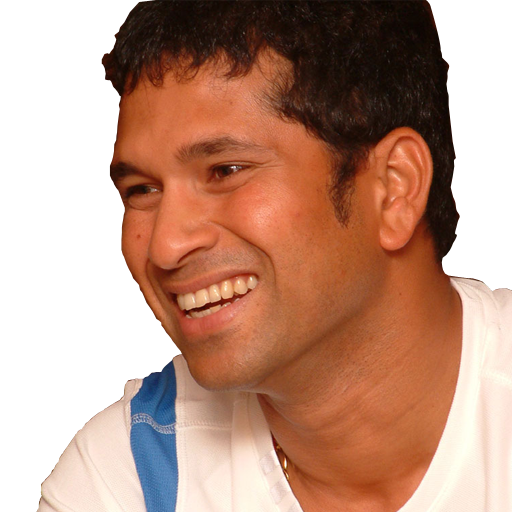

People throw stones at you and you convert them into milestones.

Biography
Sachin Ramesh Tendulkar (born 24 April 1973) is an Indian former international cricketer who
captained the Indian national team.
He is regarded as one of the greatest batsmen in the history of cricket. He is the all time
highest run-scorer in both ODI and
Test Format with more than 18000 runs and 15000 runs respectively in total. He also holds the
record for receiving most Man-of-the-match
awards in International Cricket with all forms combined. He is sometimes referred to as "The God
of Cricket" in India. A film with that
name was released in 2021. Tendulkar took up cricket at the age of eleven, made his Test match
debut on 15 November 1989 against Pakistan
in Karachi at the age of sixteen, and went on to represent Mumbai domestically and India
internationally for close to twenty-four years.
In 2002, halfway through his career, Wisden ranked him the second-greatest Test batsman of all
time, behind Don Bradman, and the second-greatest
ODI batsman of all time, behind Viv Richards. Later in his career, Tendulkar was part of the
Indian team that won the 2011 Cricket World Cup,
his first win in six World Cup appearances for India. He had previously been named "Player of
the Tournament" at the 2003 edition of the
tournament.